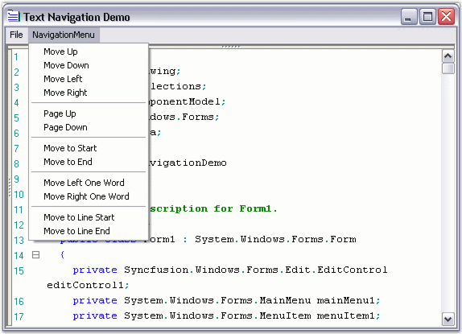

Edit Control offers extensive support for text navigation. You can perform navigation at character, word, line, page or entire document levels. Here is a brief summary of the APIs available at each level.
Character Level Navigation
The following APIs enable text navigation in the Edit Control, in terms of characters or columns.
|
Edit Control Method |
Description |
|
MoveUp |
Moves cursor up, if possible. |
|
MoveDown |
Moves cursor down, if possible. |
|
MoveLeft |
Moves cursor left, if possible. |
|
MoveRight |
Moves cursor right, if possible. |
|
[C#]
this.editControl1.MoveDown(); this.editControl1.MoveLeft(); this.editControl1.MoveRight(); |
|
[VB.NET]
Me.editControl1.MoveDown() Me.editControl1.MoveLeft() Me.editControl1.MoveRight() |
Word Level Navigation
The following APIs enable text navigation in the Edit Control, in terms of words.
|
Edit Control Method |
Description |
|
MoveLeftWord |
Moves caret to the left by one word. |
|
MoveRightWord |
Moves caret to the right by one word. |
|
[C#]
this.editControl1.MoveRightWord(); |
|
[VB.NET]
Me.editControl1.MoveRightWord(); |
Line Level Navigation
The following APIs enable text navigation in the Edit Control, in terms of lines.
|
Edit Control Method |
Description |
|
MoveToLineStart |
Moves caret to the beginning of the line. First whitespaces will be skipped. |
|
MoveToLineEnd |
Moves caret to the end of the line. |
|
[C#]
this.editControl1.MoveToLineEnd(); |
|
[VB.NET]
Me.editControl1.MoveToLineEnd(); |
Page Level Navigation
The following APIs enable text navigation in the Edit Control, in terms of pages.
|
Edit Control Method |
Description |
|
MovePageUp |
Moves caret one page up. |
|
MovePageDown |
Moves caret one page down. |
|
[C#]
this.editControl1.MovePageDown(); |
|
[VB.NET]
Me.editControl1.MovePageDown(); |
Document Level Navigation
The following APIs enable text navigation in the Edit Control, in terms of documents.
|
Edit Control Method |
Description |
|
MoveToBeginning |
Moves caret to the beginning of the file. |
|
MoveToEnd |
Moves caret to the end of the file. |
|
[C#]
this.editControl1.MoveToEnd(); |
|
[VB.NET]
Me.editControl1.MoveToEnd(); |

Figure 14: Text Navigation Options in Edit Control
A sample which demonstrates Text Navigation is available in the following sample installation path.
..\My Documents\Syncfusion\EssentialStudio\Version Number\Windows\Edit.Windows\Samples\2.0\Text Navigation\TextNavigationDemo
 Positions and
Offsets
Positions and
Offsets